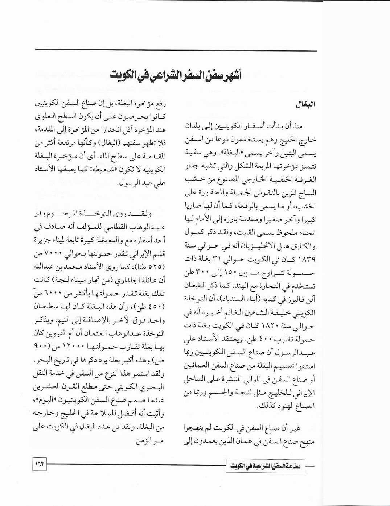
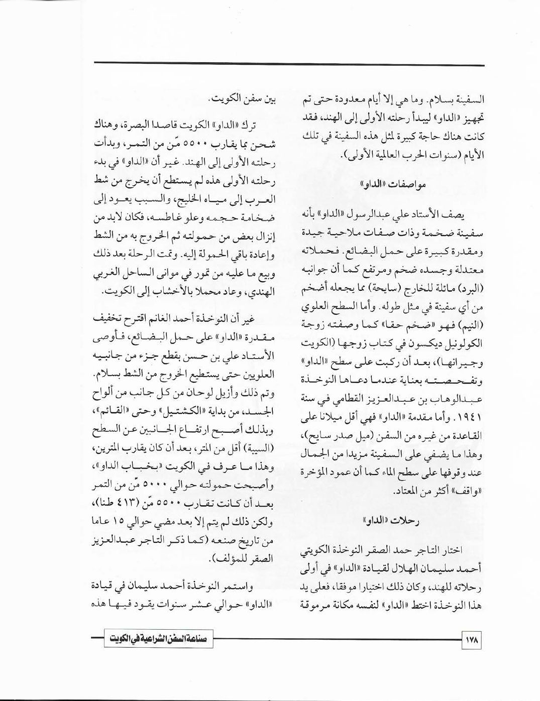

About 1910 to 1941 (published book) · Pages from Sina'at Al-Sufun Al-Shira'iya fil-Kuwait (Sailing Ship Building in Kuwait)
Pages from Dr Yacoub Al-Hijji's book on Kuwaiti sailing ships that name the family
What it is
Page 162: Bader Abdulwahab tells the author of a huge baghla from Qeshm he saw while sailing with his father. Pages 178 and 179: Abdulwahab bin Abdulaziz commands Al-Daw from about 1936 to 1941, brings it into Muttrah at night, which Alan Villiers called «the height of seamanship», and holds a sea evening at Berbera in 1939. Page 186: Abdulaziz Al-Qatami among the nakhudas at the launch of the boom Tayseer before Sheikh Mubarak. Page 201: Abdulwahab bin Eissa commands the ship that took Kuwait's merchants to Bahrain to repair the boom Walad Mubarak.
Why it matters
A maritime historian's account of three generations of the family at sea.
Page copies


Notes
Only the first pages are shown here. Family members who sign in can see all 5 pages.
Others named
Sources
Dr Yacoub Yousef Al-Hijji, Sina'at Al-Sufun Al-Shira'iya fil-Kuwait, Center for Research and Kuwaiti Studies. Pages shared by the Al-Mubarak family archive, almubarak-kw.com.
How this text was made: Page copies of a published book.
Open in the interactive site